R/regarima_plot.R, R/sa_plot.R
plot.RdPlotting methods for the S3 class objects around the seasonal adjustment: "regarima" for RegARIMA,"decomposition_X11" and "decomposition_SEATS" for the decomposition with X13 and TRAMO-SEATS, "final" for the final SA results and "SA" for the entire seasonal adjustment object. The function plot.SA just calls the function plot.final.
# S3 method for regarima plot( x, which = 1:6, caption = list("Residuals", "Histogram of residuals", "Normal Q-Q", "ACF of residuals", "PACF of residuals", "Decomposition", list("Y linearised", "Calendar effects", "Outliers effects"))[sort(which)], ask = prod(par("mfcol")) < length(which) && dev.interactive(), ... ) # S3 method for decomposition_X11 plot(x, first_date, last_date, caption = "S-I ratio", ylim, ...) # S3 method for decomposition_SEATS plot(x, first_date, last_date, caption = "S-I ratio", ylim, ...) # S3 method for final plot( x, first_date, last_date, forecast = TRUE, type_chart = c("sa-trend", "cal-seas-irr"), caption = c(`sa-trend` = "Y, Sa, trend", `cal-seas-irr` = "Cal., sea., irr.")[type_chart], ask = length(type_chart) > 1 && dev.interactive(), ylim, ... ) # S3 method for SA plot(x, ...)
| x | the object to plot. |
|---|---|
| which | vector with numerics specifying which graphs should be plotted: (1) "Residuals", (2) "Histogram of residuals", (3) "Normal Q-Q", (4) "ACF of residuals", (5) "PACF of residuals", (6) "Decomposition", (7) "Decomposition - zoom". |
| caption | list or character with the graphs titles. |
| ask | logicals. If |
| ... | other parameters. |
| first_date | the first date to start the plot. If missing the plot starts at the beginning of the time-series. |
| last_date | the last date to end the plot. If missing the plot ends at the end of the time-series (eventually, including forecast). |
| ylim | the y limits of the plot. |
| forecast | logical indicating if forecasts should be included in the plot. If |
| type_chart | character vector indicating which type of chart to plot. |
# \donttest{ myseries <- ipi_c_eu[, "FR"] mysa <- x13(myseries, spec = c("RSA5c")) # RegArima plot(mysa$regarima) # 6 graphics are plotted by default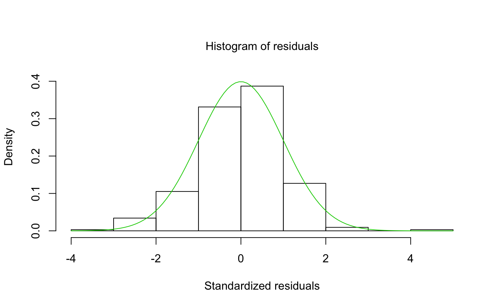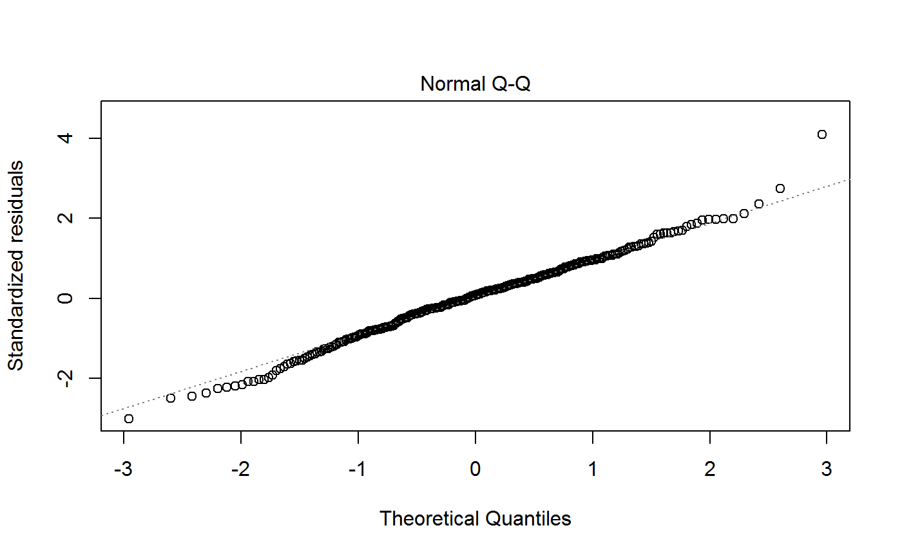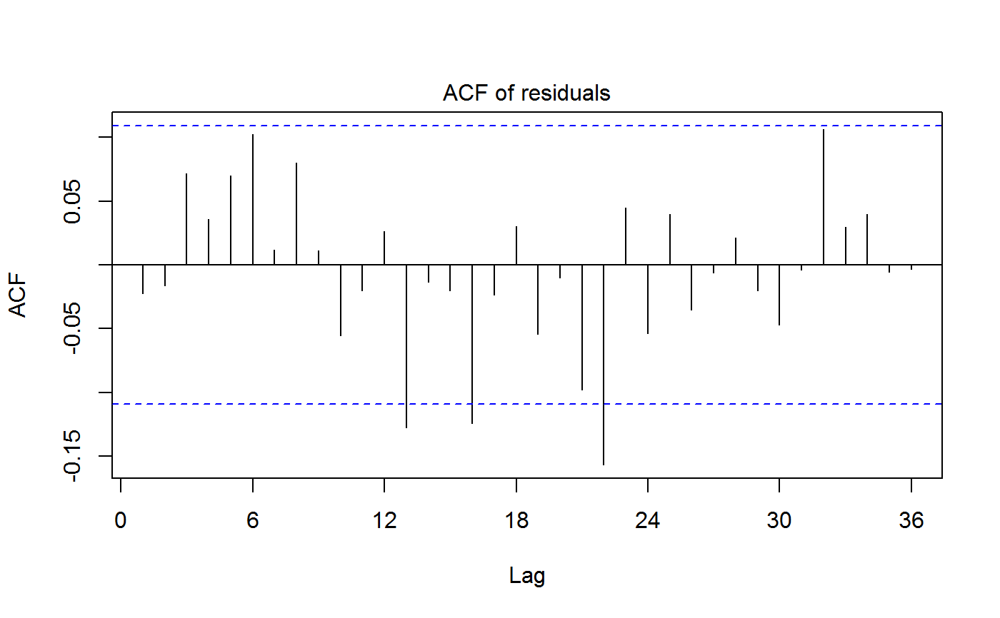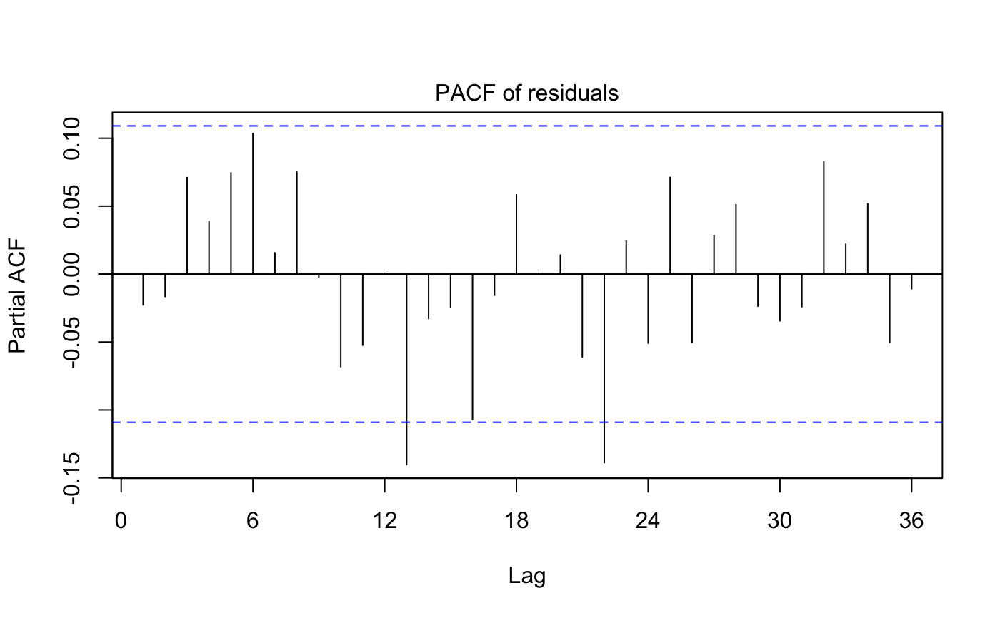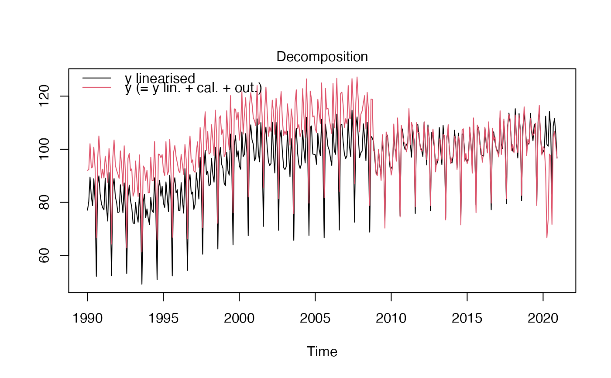# To only plot one graphic (here the residuals) changing the title: plot(mysa$regarima, which = 1, caption = "Plot of residuals")plot(mysa$regarima, which = 7)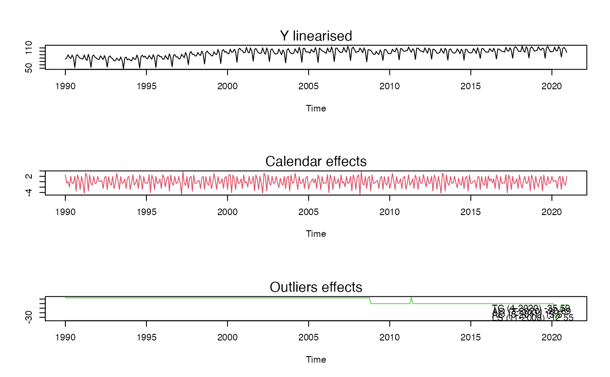# Decomposition plot(mysa$decomposition) # To plot the S-I ratio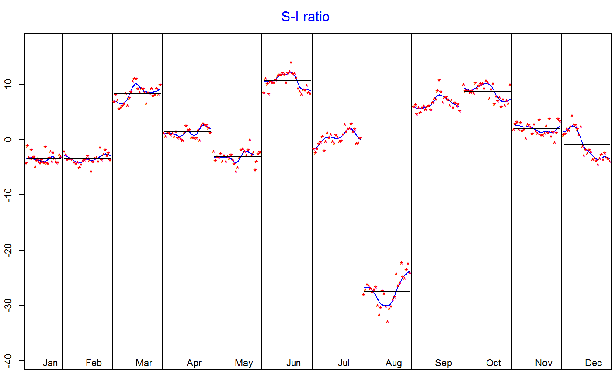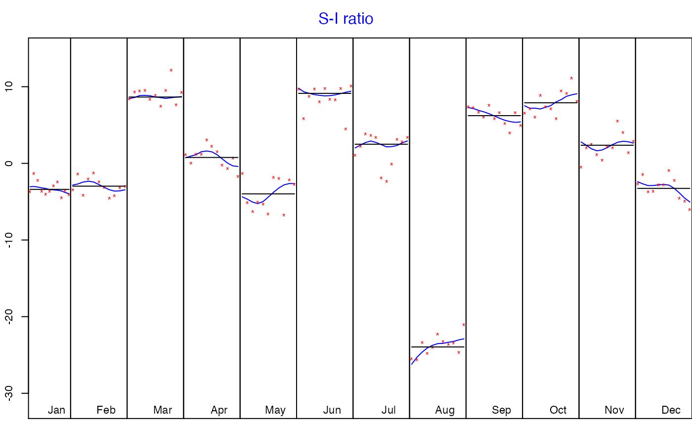# Final plot(mysa$final) # 2 graphics are plotted by default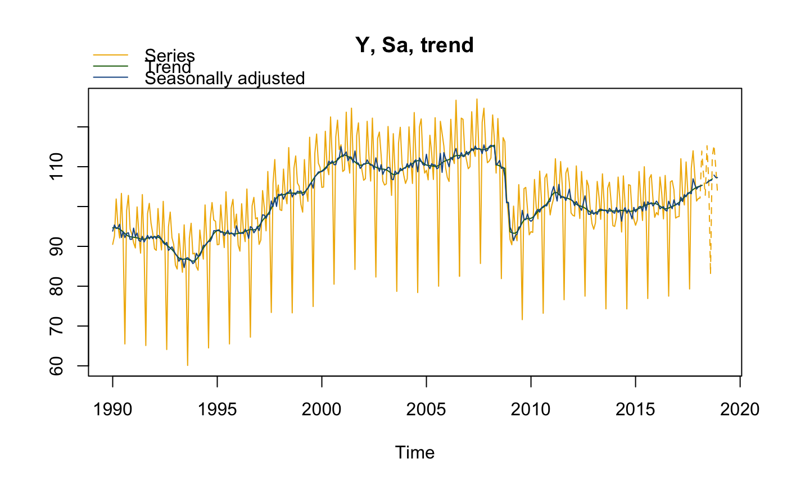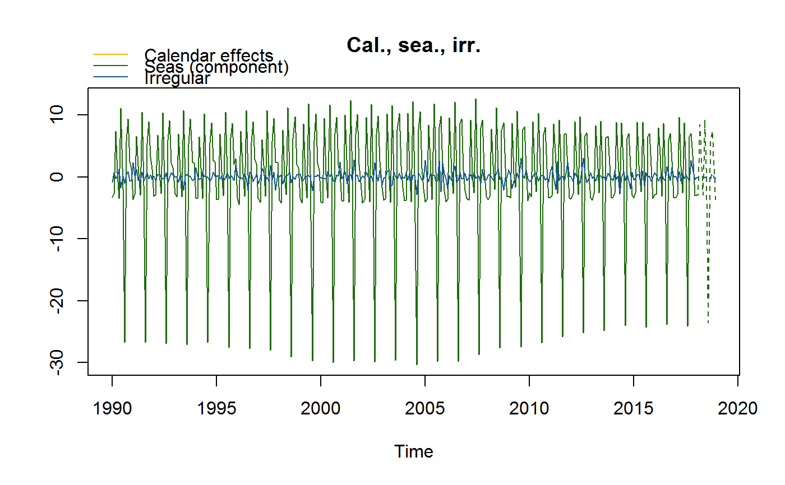# To only plot one graphic (here raw data, seasonal adjusted data and trend), # changing the last date and the title plot(mysa$final, last_date = c(2000, 1), caption = "Results", type_chart = "sa-trend")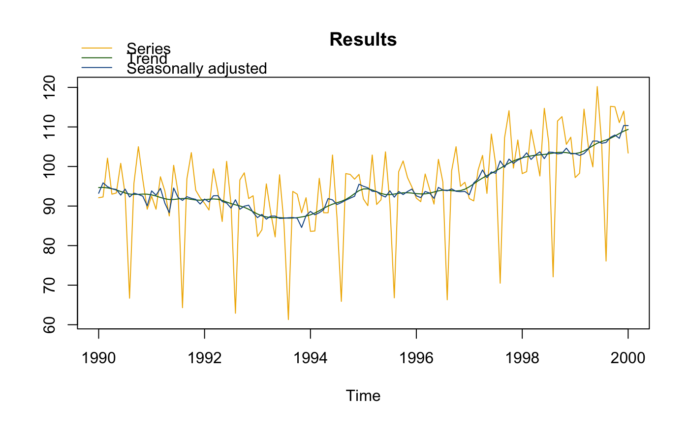# }